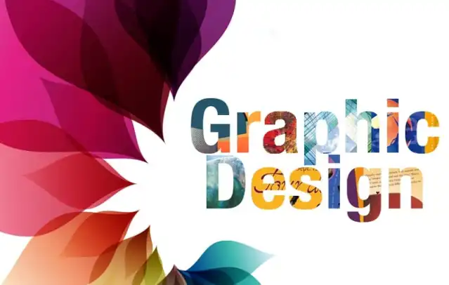

I proudly showcase my expertise in graphic design. With a passion for visual storytelling and a keen eye for aesthetics, I specialize in creating captivating designs that communicate effectively. From logos and branding to marketing collateral and web graphics, my portfolio reflects a diverse range of projects that demonstrate my versatility and commitment to delivering visually striking content. Proficient in industry-standard design tools, I ensure each project is tailored to meet the unique needs of clients, leaving a lasting impression and enhancing their brand identity. Through my portfolio, I invite you to explore the creative journey that underlines my dedication to producing impactful and visually appealing graphic designs.
